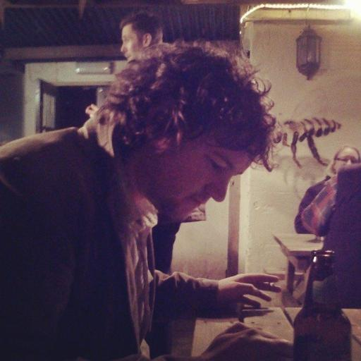
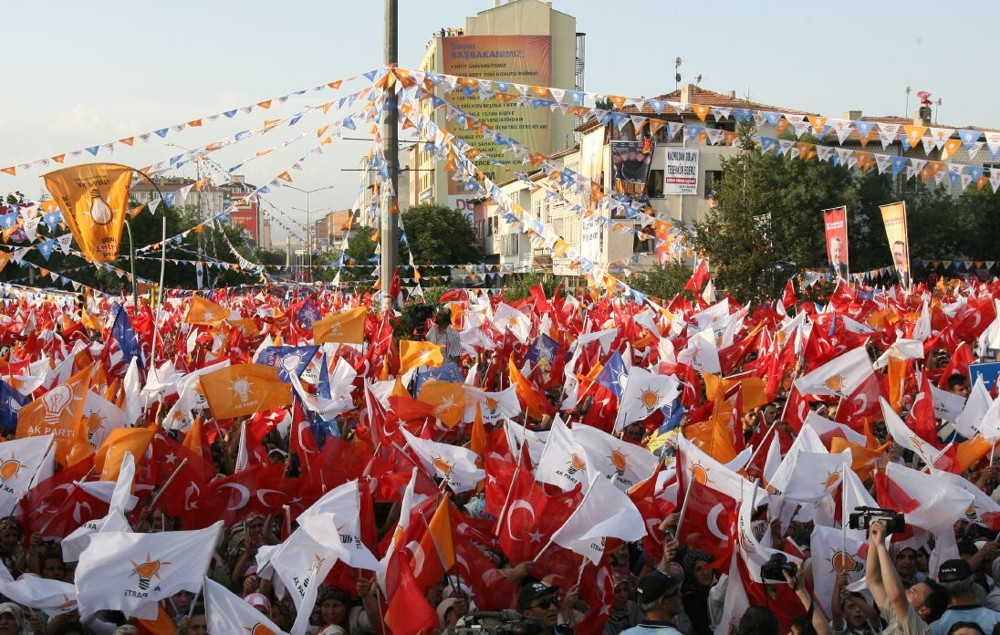
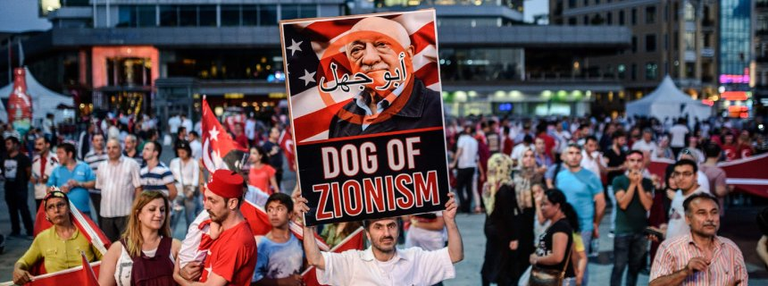

History of the Press in Turkey
Freedom of Press in Turkey
From accounts given by journalists experiencing the situation within Turkey as well as data reports published by the Freedom House, it is clear to see that Turkey's press wasn't particularly free to begin with. As apparent from the graph below, it is clear to see the decline in press freedom as in 2014, Freedom House declared Turkey's press status not free.
"why is there no solidarity?" -CRAIG SHAW

Craig Shaw, a British journalist currently living in Germany, specialises in corruption, human rights and cross-border investigations. He has a deep interest within Turkey and issues related to the country. His work has been featured throughout publications internationally, including The Guardian, The Sunday Times and theblacksea.eu.
Craig Shaw explains how the"country has a long history of anti-free speech activities that includes cooperation with the mafia to assassinate journalists and activites". However, within modern times, he explains how the situation is different.
"While the jailing of journalists under Erdogan is shocking, there are number of supplementary and cultural problems than contribute to it. For starters, many journalists are not really jailed because of a specific story they publish - though this does happen. Often it is because they work at a particular newspaper or said something on social media."
Within this, although though Turkey has a significant problem with the concept of free-speech, it applies to the 'liberal' reporters who attack and call for bans on materials they don't like almost as often as the pro-government journalists. "The cause of one journalist being jailed is often another journalist making them a target - though only journalists who are anti-Erdogan in some way are likely jailed". This is because a journalist will almost never defend the rights of a colleague who is on the opposite political spectrum. Therefore, Craig highlights an important question of: why is there no solidarity?
The other issues highlighted is that "Turkish journalism is very poor". Craig explains how the indsutry is populated by columnitsts who write what they think and do no research.
"There are so few investigative journalists, that I can hardly find any to hire. And the level of work from those I do is not up to scratch. One big case going on at the moment involves a journalist who received a conviction for 'insulting' the former prime minister. I happen to know that her reports about him are inaccurate and I told her so. Nevertheless, this is a fact she chooses to ignore when complaining to the international media about her treatment, which is still shocking.
Despite this, there are other and more serious issues, Craig mentions, including the Kurdish media. However, he creates a focal point around the general cauldron of problems within Turkish free speech, political alignment, and the unwillingness to have an open and safe debate means that it is surprisingly easy for Erdogan to crackdown on those who disagree with him.
"Turkish journalists ended Turkish journalism hand in hand with the state" - ZEYNEP SENTEK

Zeynep Sentek, a colleague of Craig Shaw interviewed in the following chapters, supports Craig in saying that the journalism before hand was already bad. However, she recalls how when President Erdogan's AKP was elected, "many liberals, intellectuals, left-wing associations etc also supported him due to AKP’s campaign promising freer society and more democracy.
"This is why Erdogan got so popular at the beginning, because of his promises. The same applies to journalists; the praise to him was from all sides, including the foreign press. This support went on for a long long time even Erdogan was started to clearly getting anti-democratic. Journalists started taking sides."
In 2008, there was a plot to bring down the military and big investigations were published by a group of journalists revealing a supposed coup attempt by the military and all the plans. However, these plans and all the Ergenekon proccesses ended up being proved that it was all made-up. Some of the journalists that were involved within this still to this day say "but the documents we got looked too real to be fake".

This was the initial breaking point in polarisation of Turkish media and journalists. During this time, as they took sides, they smeared each other. They celebrated their colleagues going to prison. Especially journalists associated with the Gulen movement (Zaman newspaper and the like) were heavily politically involved in these trials, taking suitcases of “evidence” to the prosecutors etc.
Zeynep mentions also how "Many of the journalism ethical lines were crossed and then crossed again". It shocks her to hear people cry and saying that "journalism is dead in Turkey". "It’s a situation of, 'good morning where were you in the last 10 years?'". As for the Gulen-affiliated journalists, Zeynep explains how they are now in jail and "there are none left to defend them because they were the first gravediggers. There is very little sympathy for them".
"I’m not counting here many Kurdish journalists and also those whose journalistic credentials are clean but got burned writing about the state, they are the exception and they have always been in danger. But they’re the exception.
"Turkish journalists ended Turkish journalism hand in hand with the state."